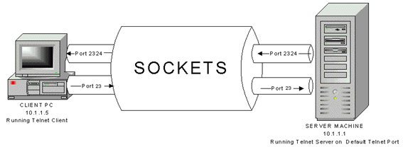

O que é socket?
Um socket, ou "soquete" em português, é um ponto final em um canal de comunicação bidirecional usado para trocar dados entre programas, seja na mesma máquina ou através de uma rede.
É um conceito fundamental na arquitetura cliente-servidor, onde os sockets permitem que um aplicativo cliente se conecte e interaja com um servidor para enviar e receber informações,
como acontece ao aceder a páginas da web.

Tipos de sockets:
Intel
- LGA 1150
- LGA 1151
- LGA 1200
- LGA 1700
AMD
- AM4
- AM5
- PGA 1331
- PGA 988